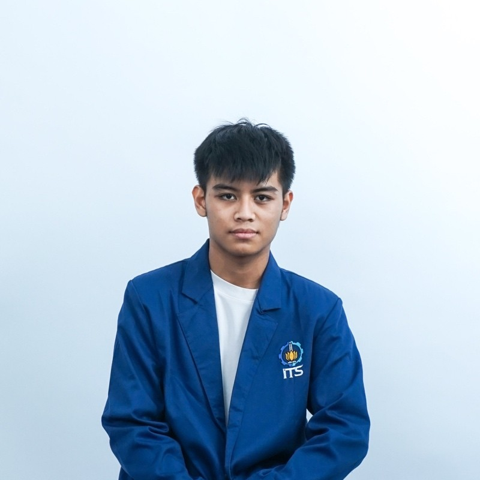
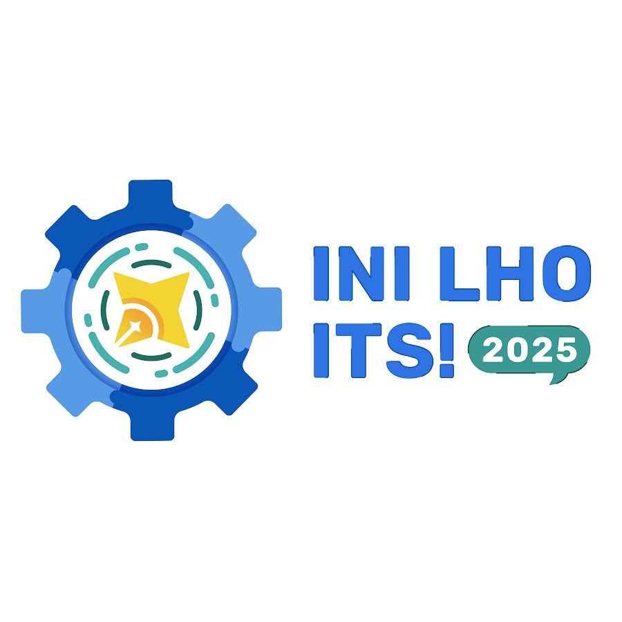
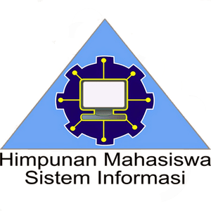
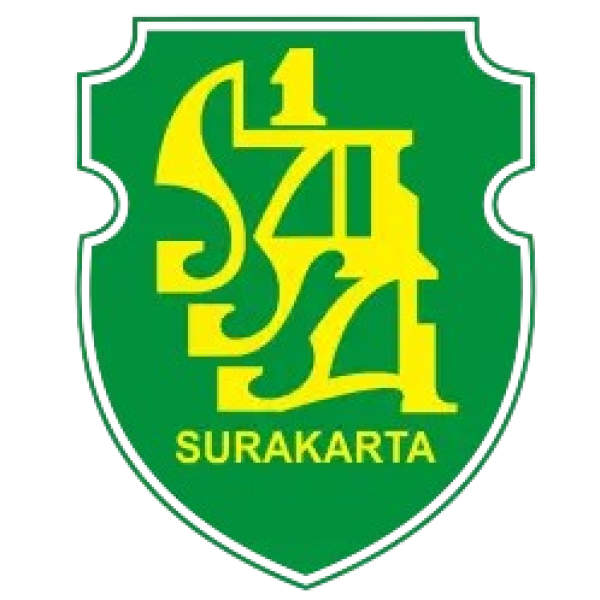

Welcome! 👋
I'm Alexander Satryo Pinandhito Yudho Pratomo
An Information Systems student at Institut Teknologi Sepuluh Nopember with a strong interest in entrepreneurship. Excels in time management and is eager to continuously learn and improve by applying acquired knowledge, supported by strong communication skills.

About Me
An Information Systems student at ITS with a strong interest in entrepreneurship. Possesses excellent time management skills and a willingness to continuously learn and improve by implementing acquired knowledge, supported by good communication abilities.
Download CVExperience

Central Bank of Indonesia
Surakarta, Central Java
Unit Management Intern
July 2025 (1 Month)
- Managed and systematically archived important documents (both physical & digital) to ensure easy access, in accordance with Bank Indonesia standards.
- Performed verification and quality control on printed documents to guarantee data accuracy.
- Supported team efficiency by organizing a clear and structured document distribution workflow.

Ini Lho ITS!
Surakarta, Central Java
Operational Staff
Dec 2024 - Jan 2025
- Coordinated the logistical requirements and prepared all necessary equipment for two key event segments: 'Visit ILITS' and the 'Try Out Welcome Sepuluh Nopember'.
- Provided operational support to ensure the seamless execution of event activities for all participants.
- Played an active role in troubleshooting operational issues, ensuring the whole event was a success from start to finish.
IT Staff
Dec 2024 - Jan 2025
- Proactively assisted participants with pre-event device checks to ensure they were ready for the online test.
- Served as the go-to technical support during the Try Out, helping participants solve any issues that came up with their connection or devices.
- Monitored network connectivity throughout the session to maintain a stable and reliable testing environment for all users.

HMSI ITS
Surabaya, East Java
Member of Entrepreneurship - Internship
Jul 2023 - Oct 2023
- Managed and compiled student data for the Information Systems Department to support the division's strategic initiatives.
- Actively collaborated with team members in regular meetings to identify challenges, brainstorm solutions, and plan project next steps.
- Executing the "Hello Expert" interview event, from the planning stages through to successful delivery.
Education

Institut Teknologi Sepuluh Nopember
Surabaya, East Java
Information Systems
2022 – Now

SMA Negeri 1 Surakarta
Surakarta, Central Java
MIPA
2019 – 2022
Projects
Project 5
Desc.
Project 6
Desc.